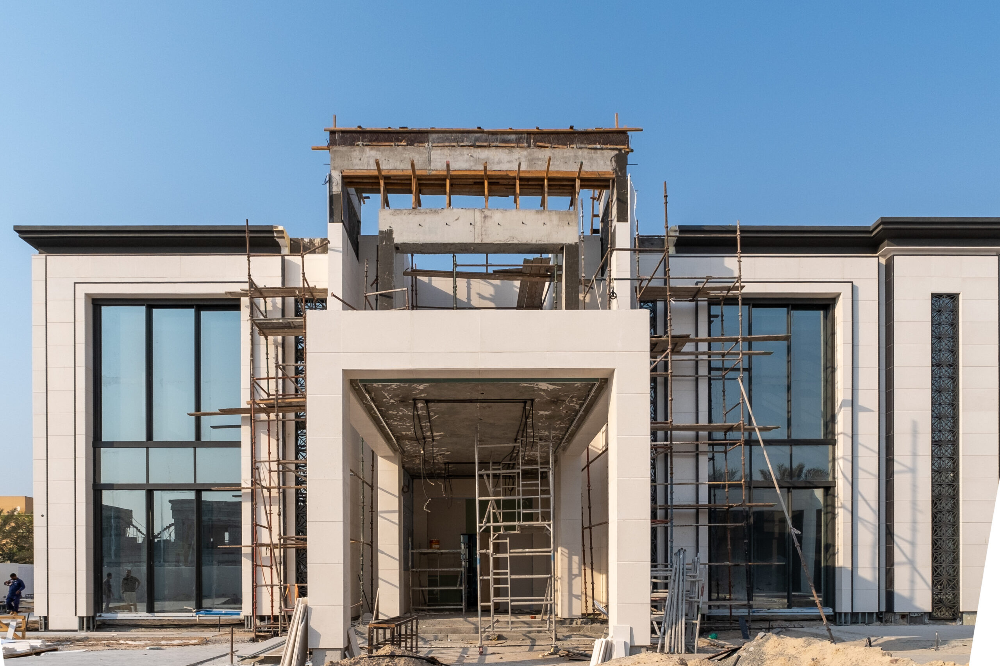

How to Manage Your Dubai Villa Construction from the UK, Europe, North America, and Asia: A Complete Guide for Overseas Owners
Building a luxury villa in Dubai while living overseas sounds straightforward when everything looks organised on paper. Yet many owners discover that distance creates communication gaps, delayed decisions, cost variations, and quality concerns that become increasingly difficult to control remotely. In this guide, you will learn exactly how experienced project management systems help overseas clients successfully manage Dubai villa construction from the UK, Europe, North America, Asia, and beyond.
KEY TAKEAWAYS:
- Remote villa construction management involves structured oversight systems that allow overseas owners to control projects without being physically present in Dubai.
- Owner's Representation protects overseas clients by managing contractors, reviewing costs, monitoring quality, and co-ordinating all project stakeholders locally.
- Weekly reporting systems reduce communication gaps and improve decision-making speed during Dubai villa construction projects.
- Variation control procedures prevent unnecessary contractor claims and unexpected budget escalation throughout the construction programme.
- Quality assurance processes, including independent inspections and digital documentation, improve accountability when clients cannot visit the site regularly.
- Luxury villa construction in Dubai requires strong co-ordination between consultants, contractors, suppliers, and a dedicated client representative.
- Professional project management creates the visibility, transparency, and control that overseas property owners need to protect their investment.
What Is Remote Villa Construction Management in Dubai?
Remote villa construction management is the process of overseeing a construction project through structured reporting, local representation, and digital co-ordination systems that give overseas owners full visibility and control without physical presence on site. It is not a compromise. When structured correctly, it is a professional discipline that produces better outcomes than unstructured client-direct oversight, regardless of whether the client is in London, New York, Singapore, or Dubai itself.
The foundation of remote management is a qualified local team acting on your behalf. For clients considering luxury villa project management in Dubai, this typically means a dedicated Owner's Representative or project manager who attends every site meeting, reviews every contractor submission, certifies every payment, and reports to you on a structured schedule that keeps you informed without requiring your daily involvement.
Remote management is not a new concept in the UAE. Many of Dubai's most prestigious villa projects in Palm Jumeirah, Emirates Hills, and Arabian Ranches have been delivered for clients based in the United States, the United Kingdom, Switzerland, Hong Kong, and Saudi Arabia. The difference between the projects that succeed and those that do not is rarely the client's location. It is the quality of the local oversight structure they put in place before constructiona, Emirates begins.
Why Is Managing a Dubai Villa Project from Abroad So Challenging?
Managing a Dubai villa project from abroad is challenging because construction decision-making is time-sensitive, site-specific, and dependent on local regulatory knowledge that most overseas clients do not have. The combination of these factors creates a vulnerability that contractors, and occasionally consultants, can exploit when there is no experienced local representative to hold them accountable.
The five most significant challenges overseas clients face are consistent across all international markets. Time zone gaps between Dubai and the UK, US East Coast, and Asia Pacific range from four to eight hours in standard trading windows, meaning that urgent contractor instructions can sit unaddressed for a full working day. Limited site visibility means quality failures that would be caught by a present client are closed behind walls and ceilings before anyone notices. Contractor accountability weakens when the client is not present, and variation claims increase as a result. Delayed decisions triggered by communication lags extend the programme and frequently activate delay-related cost claims. Budget tracking becomes reactive rather than proactive when the client is relying on contractor-produced cost summaries rather than independently verified reports.
A 2023 study by the Project Management Institute found that projects with inadequate stakeholder communication were 56% more likely to experience budget overruns than those with structured reporting frameworks — Source: PMI Pulse of the Profession, 2023. For overseas villa owners, inadequate communication is not a risk. It is the default state without deliberate systems in place.
How Can Overseas Owners Monitor Villa Construction Progress Remotely?
Overseas owners monitor Dubai villa construction progress effectively through a combination of weekly executive reporting, structured video walkthroughs, centralised document management, and independent site inspections carried out by a local representative. None of these mechanisms requires the client to be in Dubai. All of them require the local team to be organised, accountable, and experienced enough to identify problems before they become expensive.
Weekly Reporting and Executive Summaries
First, a structured weekly report is the most important communication tool in remote villa management. A well-prepared report covers programme progress against the baseline schedule, cost performance against the approved budget, outstanding approvals and authority submissions, variation instructions raised and their cost status, quality observations from the week's site inspections, and a clear summary of decisions required from the client in the following week. For construction project management consultancy in Dubai, producing this report on a consistent weekly cycle is a non-negotiable professional standard.
Video Walkthroughs and Live Progress Updates
Second, structured video walkthroughs of the site, conducted by the project manager or site supervisor and shared with the client on a weekly or fortnightly basis, provide a level of visual accountability that written reports alone cannot achieve. These are not informal phone calls. They are scheduled, scripted walkthroughs that follow the same sequence each time, covering each area of the build in progress order, identifying completed works, highlighting areas under construction, and flagging any quality or programme concerns directly to camera.
Centralised Documentation and Decision Tracking
Third, all project documentation, including drawings, specifications, variation instructions, payment applications, authority approvals, and client decisions, should be held in a single centralised system accessible to both the local team and the overseas client in real time. A clear decision log, updated weekly, tracks every outstanding client instruction, its due date, and its programme impact. This prevents the "I was waiting for your approval" contractor narrative that routinely extends programmes and generates delay claims.
What Role Does Owner's Representation Play in Overseas Construction Projects?
Owner's representation involves protecting a client's commercial, technical, and operational interests throughout a construction project by providing a dedicated local professional whose sole obligation is to act in the client's interest. For overseas villa owners, this is the single most important appointment on the entire project.
An Owner's Representative based in Dubai provides the physical presence that the overseas client cannot. They attend every design meeting, every site inspection, every authority submission, and every contractor negotiation on the client's behalf. They review and challenge every payment application before it is certified. They assess every variation claim against the contract before it is approved. They escalate problems early, when solutions are still cheap, rather than late, when they have become programme-critical.
For clients managing villa construction services in Dubai from the US, Canada, Australia, or Japan, the OR also provides a single point of contact who operates within UAE business hours, understands the local regulatory environment, and has the established contractor relationships to resolve disputes efficiently. For a detailed explanation of how this role works in practice, our guide on Owner's Representation in UAE construction covers the distinction between OR and project management, the specific activities performed at each project stage, and the financial return the role consistently generates.
How Do You Control Contractor Variations While Living Overseas?
Contractor variations are changes to the agreed construction scope that can affect project cost and timeline, and they are the single greatest financial risk for overseas villa owners who cannot review and challenge them in person. Cost control in construction projects involves monitoring budgets, reviewing contractor claims, and validating payment applications against independently verified site progress.
Variation control for overseas clients requires three specific systems. First, every variation must be formally instructed in writing before any work proceeds. A contractor who commences additional work without a written instruction is entitled to charge for that work at their own rates, and overseas clients are particularly vulnerable to this because they cannot verify what has been agreed verbally on site. Second, every variation cost submitted by the contractor must be reviewed against the original contract rates, independent market benchmarks, and a quantity check before it is approved. For cost control in luxury villa construction, this review is typically performed by a quantity surveyor working alongside the Owner's Representative. Third, no payment application should be certified until an independent valuation confirms that the amount claimed reflects work actually completed and materials properly incorporated into the project.
How Can You Verify Construction Quality Without Visiting Dubai?
Quality assurance in villa construction involves inspections, documentation reviews, and verification of workmanship standards against the agreed specification, and it is fully achievable for overseas clients through the right local oversight structure.
The key is that quality must be inspected at the point of construction, not after completion. For quality monitoring for construction projects on UAE villa sites, this means establishing a structured inspection programme that covers MEP first fix before ceilings are boarded, waterproofing before screed is poured, structural elements before concrete is placed, and finishes at each stage of application. Each inspection generates a written record, a photographic log, and a defect schedule that must be resolved before the next construction stage is certified for payment.
For overseas clients specifically, this inspection record serves a dual purpose. It provides real-time quality assurance and it creates a contractual evidence trail that supports any retention or defect claim at handover. Contractors who know their work is being independently inspected at every stage consistently produce higher-quality output than those operating without that oversight.
What Reporting Systems Should a Dubai Villa Project Include?
Weekly construction reporting improves transparency and helps overseas property owners make faster project decisions by converting complex on-site activity into clear, structured information that can be reviewed and acted upon remotely.
A well-structured reporting system for an overseas client should include the following components:
- A weekly executive summary covering programme, cost, quality, and decisions required from the client
- A monthly cost report updated against the approved budget with a projection to final account
- A variation log tracking all instructions raised, their cost status, and their programme impact
- A photographic progress report covering all active areas of the site that week
- A decision log identifying every outstanding client instruction with its due date and programme consequence if delayed
For clients in time zones significantly ahead of or behind Dubai, including clients on the US West Coast (UTC−7) or in East Asia (UTC+8), the reporting schedule should be agreed at project outset to ensure that weekly reports are delivered at a time that allows the client to review and respond within the same business cycle.
What Should You Do Before Starting Villa Construction in Dubai from Abroad?
Before construction begins, overseas clients should complete the following steps to establish the oversight framework that will protect their investment throughout the project:
- Appoint a Dubai-based Owner's Representative before any other consultant or contractor. This is the most important appointment of the entire project.
- Establish a written communication protocol covering reporting frequency, response timelines, and escalation procedures for urgent decisions.
- Agree a centralised document management system that gives both the local team and the overseas client real-time access to all project documentation.
- Confirm that all contractor payments will be certified against independently verified progress, not against contractor-submitted invoices.
- Appoint contractors through a competitive tender process managed by your local representative, using construction tendering and contractor selection methodology that produces properly qualified appointments.
- Establish a variation control procedure in writing before construction begins, requiring written instructions for all scope changes before work proceeds.
- Plan a minimum of two or three site visits at key programme milestones, including pre-concrete structural inspections, MEP first fix sign-off, and pre-handover snagging. These visits complement ongoing local oversight; they do not replace it.
Can You Successfully Build a Luxury Villa in Dubai Without Living in the UAE?
Yes. With the right local team, the right reporting systems, and the right contractual structures in place from the outset, overseas clients build successful luxury villas in Dubai every year. The clients who experience cost overruns, programme delays, and quality failures are almost always those who relied on the contractor or the architect to act in their interest, or who attempted to manage the project directly from abroad without local professional support.
The geography is not the problem. The absence of structure is. Dubai's construction regulatory environment, contractor market, and authority approval processes are all navigable with experienced local guidance. What they are not is self-managing.
| Client Location | Time Zone vs Dubai (GST) | Key Remote Management Consideration |
|---|---|---|
| United Kingdom | −4 hours (BST) / −5 hours (GMT) | Morning report delivery allows same-day client response |
| Central Europe | −2 to −3 hours | Significant overlap with Dubai business hours |
| US East Coast | −8 to −9 hours | Overlap limited to early Dubai morning; async reporting critical |
| US West Coast | −11 to −12 hours | Minimal overlap; structured async communication essential |
| Singapore / Hong Kong | +4 hours | Late Dubai afternoon overlaps with Asia morning; good alignment |
| Japan / South Korea | +5 to +6 hours | Evening reports in Dubai align with morning review in Asia |
| Australia (AEST) | +6 to +8 hours | Reporting cadence and decision turnaround must be explicitly agreed |
"Luxury villa construction projects in Dubai require strong co-ordination between consultants, contractors, suppliers, and project managers. For overseas clients, this co-ordination depends entirely on the quality of their local representative."
If you are planning a Dubai villa renovation or construction project from overseas, contact Tanmu Project Management Services for a free initial consultation. We will explain exactly what local oversight looks like for your specific project, your budget, and your location.